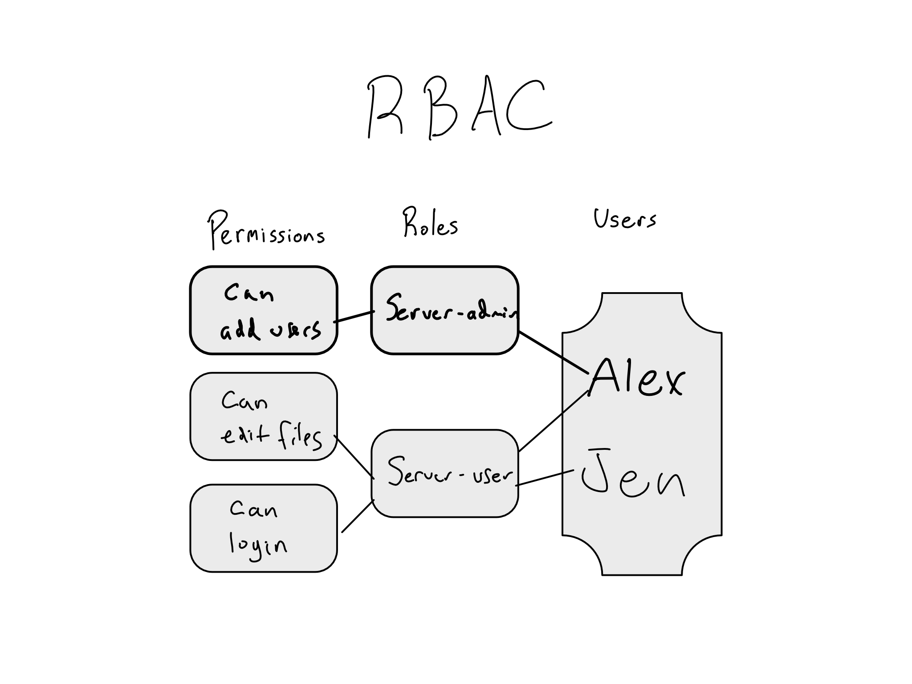

18 Auth in Enterprise
One of the core responsibilities of an IT/Admin group is making sure people can access the different systems, tools, and files they need to do their work and that unauthorized people can’t.
Like all security issues, there are two sides – keeping systems more secure and locked down decreases the likelihood of a breach, but people need some level of access to get work done.
In an enterprise context, dozens of people may join, leave, or change roles each week, and there are dozens or hundreds of different systems they might need to access. Managing who’s allowed to do what is a major logistical issue.
Moreover, the logistical issue and the security issue are related. If it’s really hard to move permissions around, something is more likely to get missed or not be done in a timely fashion. And if people don’t have the access they need to do their jobs, they’re more likely to invent workarounds that circumvent important security standards.
Balancing these needs along with the logistical complexity is hard for any enterprise IT/Admin group. The goal of this chapter is to give you the knowledge to be a good partner with whoever manages auth at your organization.
You’ll learn about how enterprise IT/Admin groups think about managing users and what they’re allowed to do. We’ll also discuss the auth issues that come up most often in a data science context.
This chapter is mostly conceptual. There’s a lot more detail on the technical details of the different technologies used to accomplish these goals in Appendix B.
18.1 How IT/Admins think about auth
Let’s start with an analogy to the real world. Imagine all the different services your company’s IT/Admin team manages as rooms in a building. Email, databases, data science workbenches, social media accounts, HR systems, and more. Each one is a room in the building.
In order to comply with the principle of least privilege, people are given access only to the rooms they need. Now imagine you’re the one who has to figure out how to keep it all secure.
When someone tries to enter a room, you’ll need a way to know who’s asking – to ascertain and validate their identity. This process is called authentication.
But just knowing who they are is insufficient. Remember, not everyone gets to access every room. So you’ll also need a way to check whether they have permission to access that room. That process is called authorization.
Together, the whole system of authenticating and authorizing people to take actions is called auth.
Many organizations start out simply. They just add IT systems one at a time and use their built-in auth functionality. That’d be like posting a guard at the door to each room who don’t talk to each other.
Each guard would issue some sort of credential that can be used to verify that the person approaching is who they say they are. For computer systems, the most common type of credential is a username and password combination.
Increasingly, organizations are moving towards other kinds of credentials instead of or in addition to usernames and passwords, including biometrics like fingerprints and facial identification, multi-factor codes or a push notification on your phone, or ID cards of some sort.
But just having each guard keep their own list of who’s allowed in and hand out their own credential is kinda a mess. As someone walking around the building, you’ve gotta keep all your credentials straight. Moreover, adding new people to the different systems or removing old people is a huge pain. You’ve gotta run around and tell each guard and then the guard has to revoke their credential.
This is a common scenario in small organizations without much central IT/Admin expertise. They tend to just use whatever auth comes with the systems they’re adopting.
In the labs in section 3, this is how we configured our server. We created a standalone server with standalone credentials. And while that’s secure enough on its own, it doesn’t integrate with any central IT/Admin capabilities.
Obviously, among enterprise organizations, this pattern doesn’t fly. If you’re only a team of 20 and you have 5 systems, it’s ok to metaphorically run around to each room. But a team of 2,000 or 20,000 with 50 or 500 systems can’t be managed this way.
So let’s start thinking about how we could make the management of this system simpler and easier.
18.1.1 Centralizing user management with LDAP/AD
The first thing would be to standardize on a single set of credentials. No more letting each guard issue their own. You’ll create a central security booth where you’ll manage all the credentials. Whenever someone approaches a door, the guard will radio in the credential, you’ll verify that all is well and tell the guard, “yep, that’s Heather!”
This makes life easier for someone using the system since they have only one set of credentials. It’s also somewhat more secure. We know now that all of the doors are using a similar level of security and if someone loses their card or gets it stolen, we just have to do one trade.
This is basically the situation that many companies have been in from the mid 1990s onwards and many still use.
An open protocol called Lightweight Directory Access Protocol (LDAP – pronounced ell-dap) and the Microsoft implementation of LDAP called Active Directory (AD) allow organizations to maintain central lists of users and the groups to which they belong.
They configure their systems to query their LDAP/AD servers. LDAP/AD would sends back information on the user including their username and groups and the service could use that information to authorize the user.
This is a huge improvement over each system having its own set of credentials, but there are still three big issues.
First, we haven’t done anything to make authorization easier. You’re now centrally verifying identities, but each guard still needs to maintain their own list of who’s allowed into their room. Changing those lists still requires running around to each room, which is time-consuming and error-prone.
Second, just how much do you trust those guards? The guards are radioing in the credentials. There’s nothing to stop them from writing them down for themselves.
Lastly, it’s kinda a pain. Having to re-authenticate at every door is a pain. If you’re logging into a lot of different systems, you’re going to have to authenticate dozens of times a day.
Over time, these problems have only gotten keener. A few decades ago, most companies had only a few systems and they were probably all on-premise systems, reducing both the hassle of changes and the risk of credentials actually being entered to those systems.
These days, even modestly-sized organizations have dozens or hundreds of IT systems and many of them are SaaS services. That means the risk of sharing credentials with those services is much higher.
Wouldn’t it be nice if there were a way to solve all these problems? A solution would allow for centralized authorization, never sharing credentials with the guards, and authenticating only once.
Enter the world of Single-Sign On (SSO).
18.1.2 Single Sign On (SSO)
Ok, so let’s revamp the system one more time.
Now, when someone enters the building, they’ll stop at the central security office and provide their credentials. In exchange, they’ll get a building access pass that’s unique to them and they cannot share.
Moreover, you’ll equip each room with a machine to swipe a building access pass. Swiping the access pass sends a request back to the central security office with the person’s name and the room number. You can check whether they’re allowed in and send back the allow signal if so and the red disallow signal if not.
Now, the guards don’t need to know anything about the people approaching and don’t need to be trusted to do anything other than appropriately respond to the allow/disallow indicator.
Moreover, you can now manage authorization in the central security office. No more running around to each room when you need to onboard or offboard someone or change their role.
This is basically how SSO works – your building access pass is a token in your computer’s web browser, and the allow/disallow decision comes from the centralized auth management system.
Now, SSO isn’t a description of a technology – it’s a description of a user and administrator experience. People have been making SSO work for a long time, but two main standards for doing SSO have arisen in the past 15 years or so.1
The most common option in enterprises is Security Assertion Markup Language (SAML), which is an XML-based standard.2 The current standard, SAML 2.0 was finalized in 2005.
The other option is Open Identity Connect (OIDC)/OAuth2.0, which used JSON-based tokens.3 It’s slightly newer than SAML, originally created by engineers at Google and Twitter in 2007. OAuth2 – the current standard – was released in 2012.
For nearly all SAML or OAuth implementations, organizations use an external identity manager. The most common ones to use are Okta, OneLogin, and Azure Active Directory (AAD).4
These days, almost all enterprises are moving quickly towards implementing SSO using either SAML or OAuth (or both).
There’s a lot more detail on the technical details of how LDAP, OAuth, SAML, and more work in Appendix B.
18.1.3 Managing permissions
Irrespective of what kind of auth technology you’re using, you have to actually manage permissions somehow. It’s worth learning a little about the options.
The simplest option is just to maintain a list of who’s allowed to enter each room. This is called an Access Control List (ACL).5
ACLs are a simple kind of permissions management that make a lot of intuitive sense.
But, as you can imagine, if your building has hundreds of rooms, that’s a lot of different rooms to keep individual lists for. Additionally, if you have permissions changing a lot, having to change individual user permissions is a pain.
Instead, you might want to create a role that has certain permissions and then assign people to that role. For example, maybe there’s the role of manager, who has access to certain rooms. There might be another role that’s executive who has access to different rooms. Managing permissions in this way is called Role Based Access Control (RBAC), and many organizations have a requirement to be able to implement RBAC to adopt a new system.

RBAC has the advantage of allowing more flexibility in creating roles and managing them relative to ACLs. You can also see how it’d be relatively simple to hook up something like your centralized HR database to an RBAC system by mapping actual users to a set of roles that is appropriate for them.
But RBAC has its own drawbacks. RBAC can result in role explosion over time – if people need specialized permissions, it’s often easier to create tons and tons of special roles rather than figure out how to harmonize them into a system.
It also can’t accommodate certain kinds of highly specific permissions scenarios. For example, what if you have a situation where room 4242 should only allow managers except from 9-12 on Tuesdays when it should allow maintenance services? That’s not something RBAC can accommodate.
If you have the need for even more granular permissions than RBAC can provide, you can create rules based on the room, the person, and the environment. This highly-flexible system is called Attribute Based Access Control (ABAC). The downside of ABAC is that it can be a real pain to set up because it is so powerful.
TODO: ABAC diagram (mapping room 4242 to person/manager to environment)
The most well-known ABAC system is the AWS Identity and Access Management (IAM) system. If you’ve ever been utterly befuddled by applying permissions to resources in AWS, you can thank the complexity of ABAC. That complexity is the tradeoff for the very high degree of flexibility ABAC provides.
18.2 Data Science Auth Concerns
The first and simplest concern that comes up for a new data science workbench is that it needs to support whatever auth mechanism your IT/Admin group has decided your organization is going to use. Hopefully you now have some context on what those various mechanisms are.
These days, most data science tools you might want to use support all of the standard SSO mechanisms – though many of them reserve that functionality for paid tiers.
18.2.1 Data Access
The second concern that comes up is how to get access to data. In our building metaphor, this would be like sending a note from one room asking for a resource in another room.
This kind of access is actually easier to configure in a non-SSO configuration. If your database can be accessed with a username and password, it’s the equivalent of being able to just put your request on a piece of paper and append your credentials. The guard can verify the credentials and send back the proper information.
It’s worth noting that this configuration is still quite common. Most organizations have implemented SSO for their external-facing services, but internal data sources are often available with username and password auth. This is mostly because relatively few databases have implemented SSO configurations. I expect this will change quickly in the next few years.
In an SSO configuration, getting access to data is kinda complicated. Remember, you’re sitting in a room and you’ve got your building access pass, which you can’t give to anyone, and you can’t get access to another room without swiping your pass at the door.
The main way this is accomplished is by giving people the ability to remotely acquire the data room access token without actually going there with the building access pass. Depending on the tool you’re using and the type of technology being used, it may be able to automatically do this exchange for you or you may have to do it manually in your code.
The first technology used to authenticate to data services is a Windows-based system called a Kerberos ticket. Kerberos is a relatively old – but highly secure system. Kerberos is mainly used in Windows-based environments, so it’s mostly used when accessing a Microsoft SQL Server.
If your organization uses Kerberos for database access, you’ll need to work with your organization’s IT/Admin group to get everything configured.
The second way to accomplish SSO into a data source is to pass along an JSON Web Token (JWT, pronounced jot). JWTs are the technology that underlies OAuth/OIDC. They’re accepted by relatively few databases these days, but I expect that will change in the next few years.
The last way to access a data source seamlessly is via integration with cloud IAM services. This will only work if you’re trying to access a cloud resource from another cloud resource. So you could allow access from an EC2 instance to an S3 bucket, but not from your on-prem compute cluster to an S3 bucket.
The patterns for doing this vary a lot by cloud and by the data science tooling you’re using. Configuring a cloud instance to “just know” who’s making a request is possible, but requires some savvy with managing cloud services.
18.2.2 Service Accounts
The last concern that comes up a lot is what entity is doing the access. In workbench environments, it’s common for humans to have credentials to data sources and to login as themselves. However, when those resources go to production, it’s very common to introduce service accounts.
A service account is a non-human entity that has permissions of its own. For example, maybe you’ve got a Shiny app that users use to visualize data that’s in a database. Very often, you don’t want the app to have the same permisions as the app’s author, or to inherit the permissions of the people viewing the app.
One important reason you might want this is that you want to manage the permissions of the app itself even if the author were to leave the company or change roles.
Instead, you want the app to be able to have permissions to do certain database operations. In that case, you would create a service account to give to the Shiny app that has exactly those permissions.
There’s no particular magic to service accounts, but you’ll need to figure out how to make your app or report run as the right user and have the correct service account credentials.
18.3 Comprehension Questions
- What is the difference between authentication and authorization?
- What are some different ways to manage permissions? What are the advantages and drawbacks of each?
- What is some advantages of token-based auth? Why are most organizations adopting it? Are there any drawbacks?
- For each of the following, is it a username + password method or a token method? PAM, LDAP, Kerberos, SAML, ODIC/OAuth
Aside from the options below, some organizations use a system called Kerberos to accomplish SSO. This is quite rare.↩︎
XML is a markup language, much like HTML. The good thing about XML is that it’s very flexible. The bad thing is that it’s relatively hard for a human to easily read.↩︎
Technically, OIDC is an authentication standard and OAuth is an authorization standard. You’ll usually just hear it all referred to as OAuth.↩︎
Yes, AAD is used for SAML/OAuth, not for LDAP. It’s confusing.↩︎
Standard Linux permissions (POSIX permissons) that were discussed in Chapter 11 are basically a special case of ACLs. ACLs allow setting individual-level permissions for any number of users and groups, as opposed to the one owner, one group, and everyone else permissions set for POSIX.
Linux distros now have support for ACLs on top of the standard POSIX permissions.↩︎